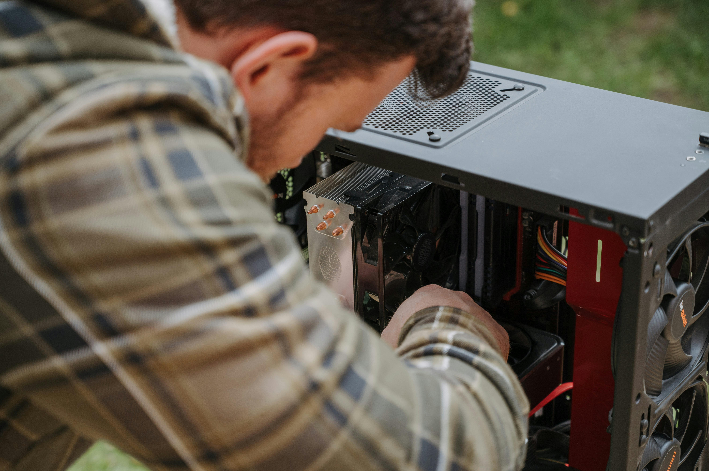

Build A PC with Free Geek Twin Cities
Select a module from the left margin to begin.
I. Introduction and Purpose
Environmental Stewardship
Building and Maintaining a PC

We prioritize used, repurposed and refurbished hardware over new equipment[cite: 3].

We'll learn all that goes into assembling and configuring a PC from its core hardware components[cite: 4, 15].
II. Computer Hardware Overview
Learners will identify essential hardware components, peripherals, and enhancements[cite: 5, 7].
III. Resourcing Equipment: New vs. Used
Exploring the environmental cost of new equipment versus the benefits of parts harvesting[cite: 8, 10].
IV. Safety
Key safety considerations regarding tools, electricity, and component handling[cite: 11, 12].
V. Assembly
Hands-on assembly of a fully functional PC to take home[cite: 13, 15].
VI. OS Install & Setup
Installing an operating system and ensuring successful operation[cite: 16, 17].
VII. Proper Disposal & Data Destruction
Responsible recycling and the importance of data destruction[cite: 18, 20, 21].